Staff guide: calling out orders at the counterPanduan staf: memanggil pesanan di kaunter
For version 1.4.0 and later
What this guide is about
Queue Announcer calls out orders for you. You type the order code from the receipt, and the computer plays a bell and reads the code out loud, so customers know their food is ready. This guide shows you how to set it up and use it at the counter.
Queue Announcer memanggil pesanan untuk anda. Taip kod pesanan daripada resit, dan komputer akan membunyikan loceng dan menyebut kod itu dengan kuat, supaya pelanggan tahu makanan mereka sudah siap. Panduan ini menunjukkan cara memasang dan menggunakannya di kaunter.
“A, 1, 0, 5. Please collect your order.”What customers hear · Apa yang pelanggan dengar
Who it's for: counter staff and supervisors.Untuk: staf kaunter dan penyelia.
Version: written for Queue Announcer 1.4.0.Versi: ditulis untuk Queue Announcer 1.4.0.
Language: English, with Bahasa Melayu in grey under each step.Bahasa: Inggeris, dengan Bahasa Melayu (kelabu) di bawah setiap langkah.
Queue Announcer · Staff guide · v1.4.0Prepared by: Haikal (IT & Merchant Support) · Created 6 Nov 20261
Contents
Tap or click a section to jump straight to it. Every page has a Contents link at the bottom to come back here.Tekan atau klik bahagian untuk terus ke halaman itu. Setiap halaman ada pautan Contents di bawah untuk kembali ke sini.
Queue Announcer · Staff guide · v1.4.0Prepared by: Haikal (IT & Merchant Support) · Created 6 Nov 20262
1Install
You needAnda perlukan
Microsoft Edge
On a computer, for the Clara voice.Di komputer, untuk suara Clara.
Speakers on
Loud enough for the counter.Pembesar suara hidup, cukup kuat untuk kaunter.
Internet
To start. Keeps working if it drops.Untuk mula. Masih berfungsi jika internet terputus.
Install it (one time per PC)Pasang (sekali bagi setiap PC)
1
haikalmhmn .github.io/ queue-announcer
Open the link in EdgeBuka pautan dalam Edge
2
⋯›Apps›Install this site as an app
Install itPasang aplikasi
3
Open from the desktop iconBuka dari ikon di desktop
Updates install themselves. No need to reinstall. Kemas kini dipasang sendiri. Tidak perlu pasang semula.
Queue Announcer · Staff guide · v1.4.0Prepared by: Haikal (IT & Merchant Support) · Created 6 Nov 2026Contents · 3
2Announce an order
1
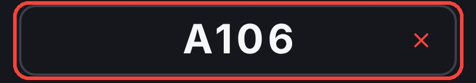
Type the codeFrom the receiptTaip kod daripada resit
2
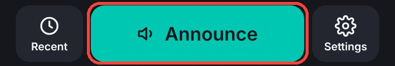
Tap AnnounceTekan "Announce"
3
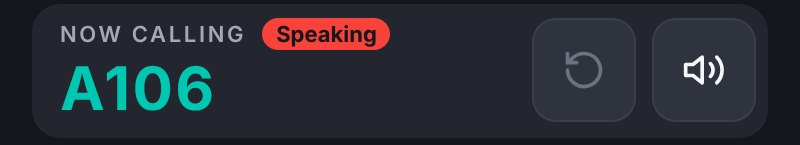
Bell, then the voiceWait until it finishesLoceng, kemudian suara. Tunggu hingga selesai.
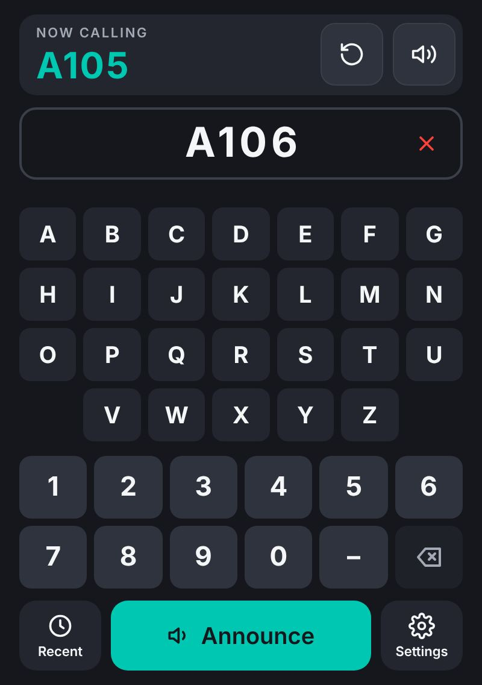
123456789
Key · Petunjuk
1Now callingPesanan yang sedang dipanggil
2Repeat last orderUlang pesanan terakhir
3Mute (red = sound off)Senyap (merah = bunyi mati)
4✕ clear the codePadam semua kod
5Letters and numbersHuruf dan nombor
6⌫ delete onePadam satu aksara
7Recent ordersPesanan terkini
8AnnounceUmumkan
9SettingsTetapan
One at a time. Type the next code while it speaks. Satu pada satu masa. Taip kod seterusnya semasa ia bercakap.
Up to 8 characters, e.g. T-042. Maksimum 8 aksara, cth. T-042.
Keyboard: Enter announce, Esc clear. Papan kekunci: Enter umumkan, Esc padam.
Queue Announcer · Staff guide · v1.4.0Prepared by: Haikal (IT & Merchant Support) · Created 6 Nov 2026Contents · 4
3Call again from Recent
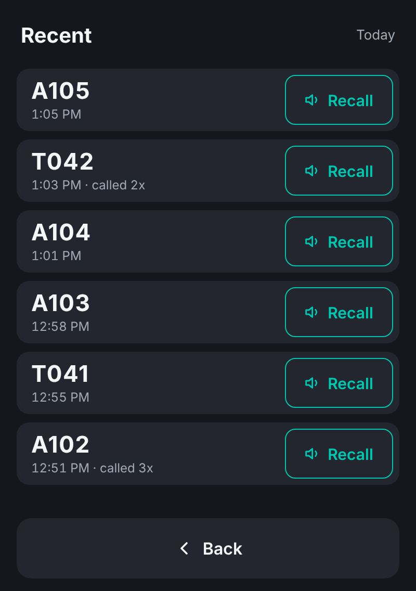
123
Key · Petunjuk
1Recall plays it againRecall: panggil semula
2Code, time, times calledKod, masa, berapa kali dipanggil
3Back to the keypadKembali ke papan kekunci
Today only, on this PC. Swipe to scroll. Hari ini sahaja, di PC ini. Leret untuk skrol.
4Floating window
Your other work
Announcer (stays on top)Small tab: don't close
First tap: the announcer floats on top. Drag it where you like.Tekanan pertama: announcer terapung di atas. Seret ke mana-mana.
Small tab moves to the bottom right.Tab kecil berpindah ke bawah kanan.
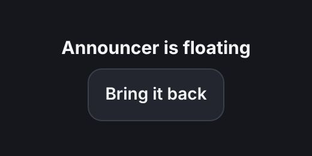
Bring it back returns it to the main window.Tekan "Bring it back" untuk kembali ke tetingkap utama.
Don't close the small tab: it closes the announcer too. Minimize it with – instead. Jangan tutup tab kecil: announcer juga akan tertutup. Kecilkan dengan butang – sahaja.
Queue Announcer · Staff guide · v1.4.0Prepared by: Haikal (IT & Merchant Support) · Created 6 Nov 2026Contents · 5
5Settings
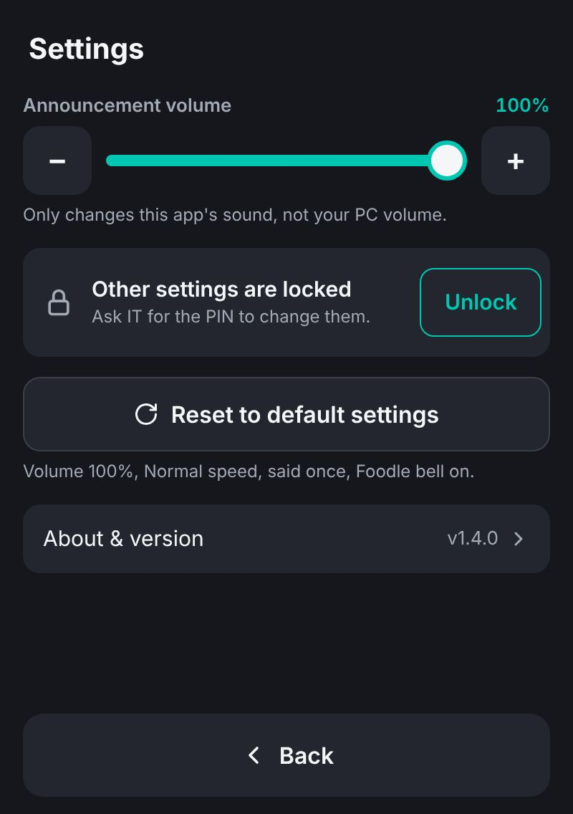
1234
Locked (normal)Berkunci (biasa)
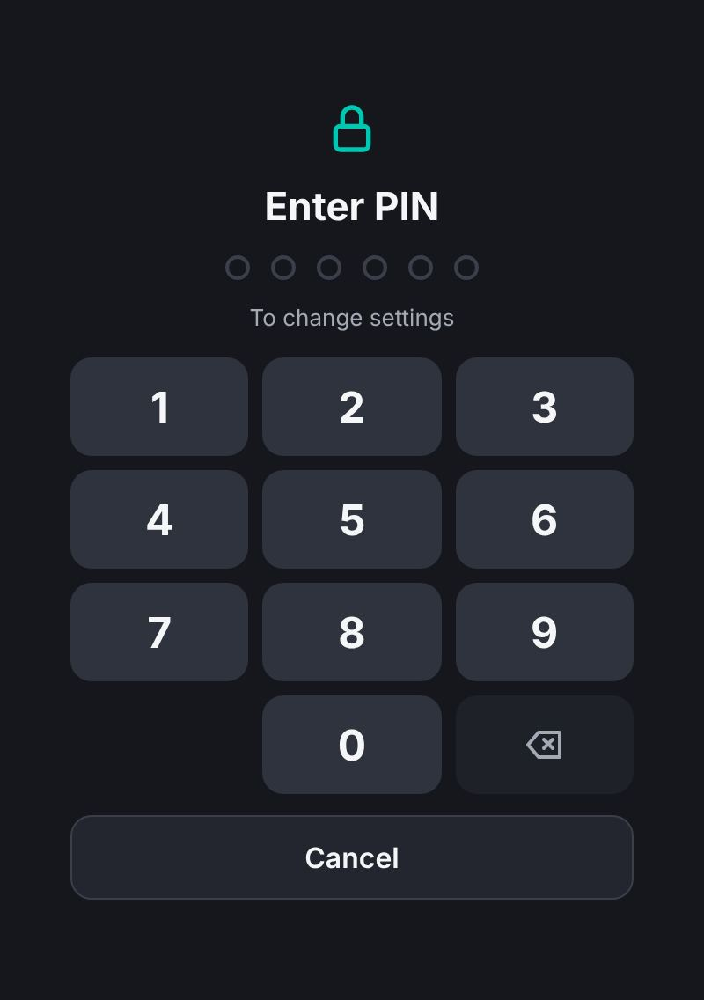
5
After tapping UnlockSelepas tekan Unlock
Key · Petunjuk
1Volume: anyone can change itKelantangan: sesiapa boleh ubah
2Unlock to change anything elseTekan "Unlock" untuk ubah tetapan lain
3Reset to default settings: tap twice, no PINTetapkan semula: tekan dua kali, tanpa PIN
4About & version: open to everyoneTerbuka untuk semua
5Type the PIN from ITMasukkan PIN daripada IT
Locks again when you leave, or after 2 minutes. Berkunci semula bila keluar, atau selepas 2 minit.
Don't know the PIN? Ask IT. Tak tahu PIN? Tanya IT.
Queue Announcer · Staff guide · v1.4.0Prepared by: Haikal (IT & Merchant Support) · Created 6 Nov 2026Contents · 6
Settings, unlockedTetapan, selepas dibuka
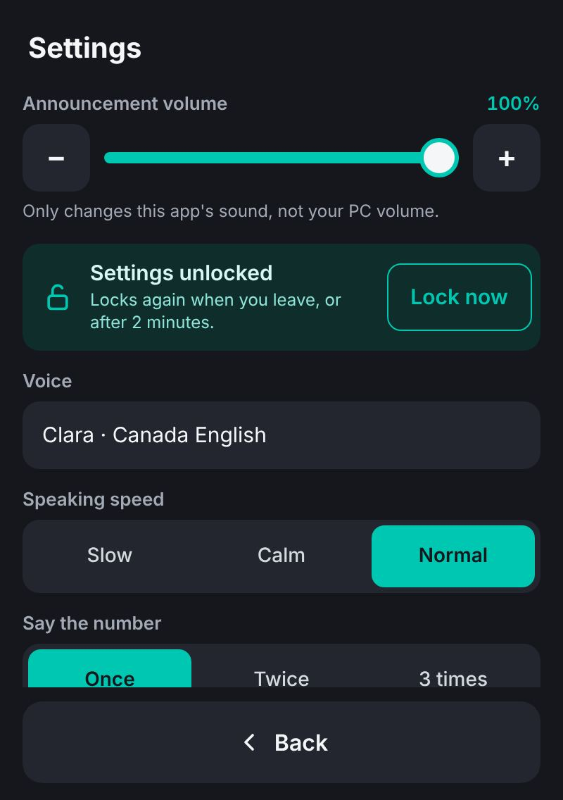
6789
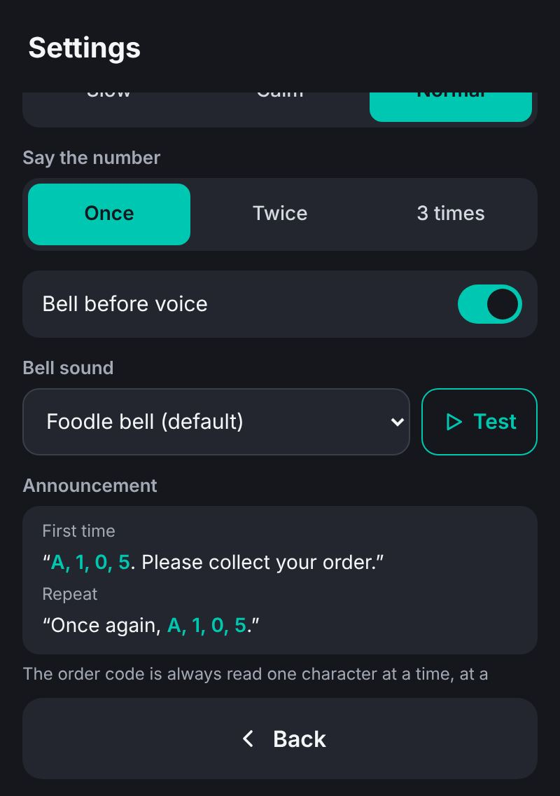
101112
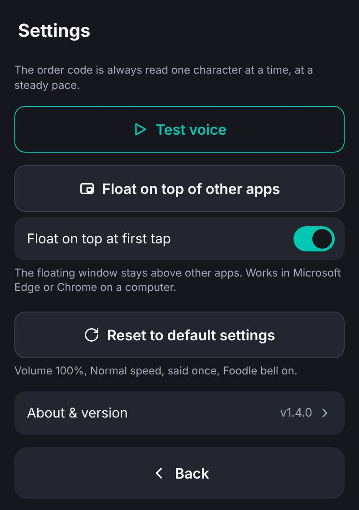
131415
Key · Petunjuk
6Lock nowKunci sekarang
7Voice: ClaraSuara: Clara
8Speed of the wordsKelajuan sebutan
9Say it 1, 2 or 3 timesSebut 1, 2 atau 3 kali
10Bell on / offLoceng hidup / mati
11Bell sound + TestBunyi loceng + uji
12What will be saidApa yang akan disebut
13Test voiceUji suara
14Open the floating windowBuka tetingkap terapung
15Float at first tapTerapung pada tekanan pertama
Each PC keeps its own settings. Reset to default brings back: volume 100%, Normal speed, said once, bell on. Setiap PC simpan tetapan sendiri. Reset kembalikan: kelantangan 100%, kelajuan Normal, sebut sekali, loceng hidup.
Queue Announcer · Staff guide · v1.4.0Prepared by: Haikal (IT & Merchant Support) · Created 6 Nov 2026Contents · 7
6Quick fixes
No sound
Mute not red? Volume up in Settings? Edge not muted in Windows Volume mixer?Tiada bunyi: Mute merah? Kelantangan rendah? Edge disenyapkan dalam Volume mixer?
Bell plays, no voice
Check Edge isn't muted, then tap Repeat. Check the internet.Loceng berbunyi, tiada suara: pastikan Edge tidak senyap, tekan Repeat. Semak internet.
Voice sounds robotic
Open from the desktop icon, not another browser. Update Edge.Suara seperti robot: buka dari ikon desktop, bukan pelayar lain. Kemas kini Edge.
No floating window
Settings → Float on top of other apps. Edge on a computer only.Tiada tetingkap terapung: Settings → "Float on top of other apps". Edge di komputer sahaja.
Announcer disappeared
The small tab was closed. Open the app again from the desktop icon.Announcer hilang: tab kecil telah ditutup. Buka semula dari ikon desktop.
Don't know the PIN
Ask IT. Volume works without it.Tak tahu PIN: tanya IT. Kelantangan boleh diubah tanpa PIN.
Settings changed by mistake
Settings → Reset to default settings, tap it twice.Tetapan berubah: Settings → "Reset to default settings", tekan dua kali.
Need the newest version
Close the app fully and reopen. Check About & version.Versi terkini: tutup app sepenuhnya dan buka semula. Semak "About & version".
Which version am I on?Saya guna versi mana?
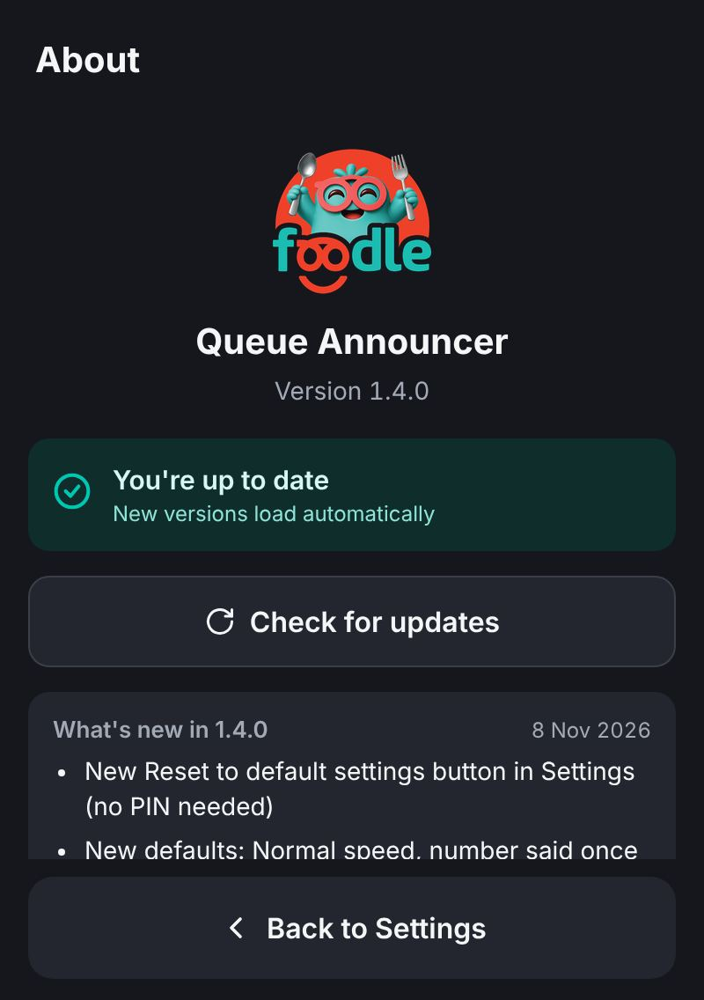
123
Key · Petunjuk
1Version numberNombor versi
2Up to date or notTerkini atau tidak
3What changed (older versions below)Apa yang berubah (versi lama di bawah)
Quick referenceRujukan pantas
Call · PanggilCode → Announce
Again · UlangRepeat · Recall
Silence · SenyapMute
Fix typing · Betulkan⌫ one · ✕ all
Queue Announcer · Staff guide · v1.4.0Prepared by: Haikal (IT & Merchant Support) · Created 6 Nov 2026Contents · 8